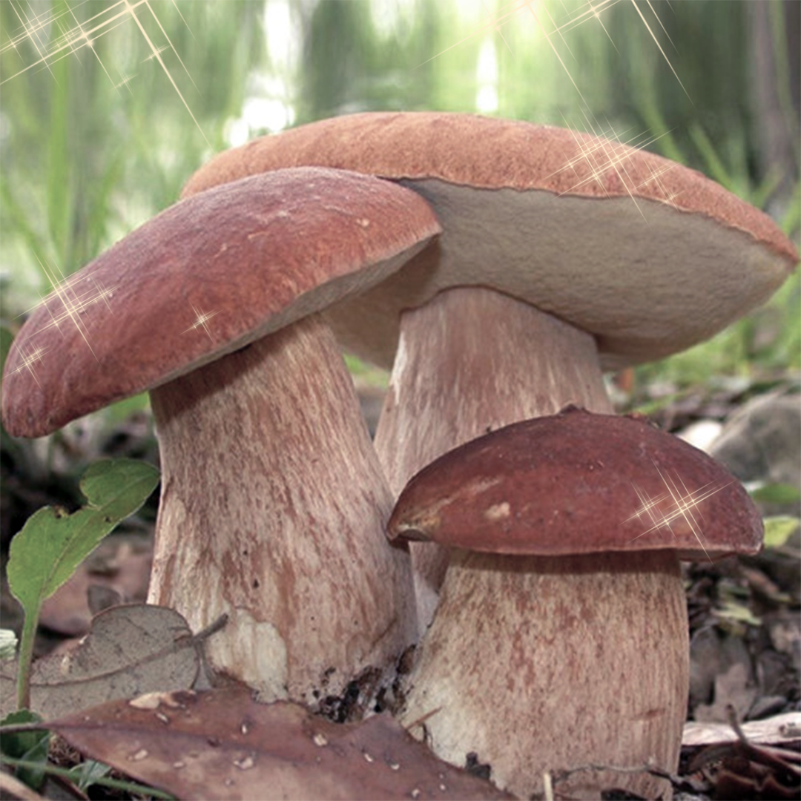

Білий гриб (лат. Boletus edulis) - це великий гриб з родини болетових.Він широко розповсюджений
по всій Північній півкулі, тому найбільш відомий та популярний серед грибників. Зазвичай білі
гриби ростуть у листяних лісах під дубом, березою, буком, ліщиною та у хвойних лісах під ялинами та соснами.
В Україні вони зустрічаються по всій території. Він має велику, м'ясисту шляпку,
яка може досягати до 30 см у діаметрі та має білу або світло-коричневу шкірку.
Під шляпкою гриба є губчастий стовбур, який може бути білого або світло-коричневого кольору.
Білий гриб вважається смачним і добре підходить для приготування страв. Однак, перед збором грибів
у дикій природі, важливо бути впевненим у їхній безпеці, оскільки є схожі види, які можуть бути отруйними.
 Білий гриб володіє високою харчовою цінністю і вважається одним з найсмачніших грибів.
Він має ніжний смак та приємний аромат, що нагадує горіхи. Цей гриб можна використовувати
у багатьох кулінарних стравах, таких як супи, рагу, смажені гриби, а також як начинку для пельменів та піци.
Білий гриб багатий на вітаміни та мінерали, включаючи вітамін D, залізо, калій та фосфор.
Білий гриб володіє високою харчовою цінністю і вважається одним з найсмачніших грибів.
Він має ніжний смак та приємний аромат, що нагадує горіхи. Цей гриб можна використовувати
у багатьох кулінарних стравах, таких як супи, рагу, смажені гриби, а також як начинку для пельменів та піци.
Білий гриб багатий на вітаміни та мінерали, включаючи вітамін D, залізо, калій та фосфор.
Перед збором білих грибів в дикій природі, важливо проявити велику обережність та ретельно вивчити характеристики
цього виду грибів, оскільки існують схожі види, які можуть бути отруйними. Для безпечного збору грибів рекомендується
користуватися спеціалізованою літературою або звертатися до досвідчених грибників. Також варто пам'ятати про екологічну
відповідальність та не завдавати шкоди лісовому середовищу під час збору грибів.
Вгору